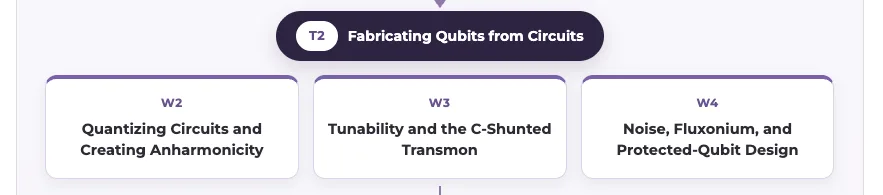
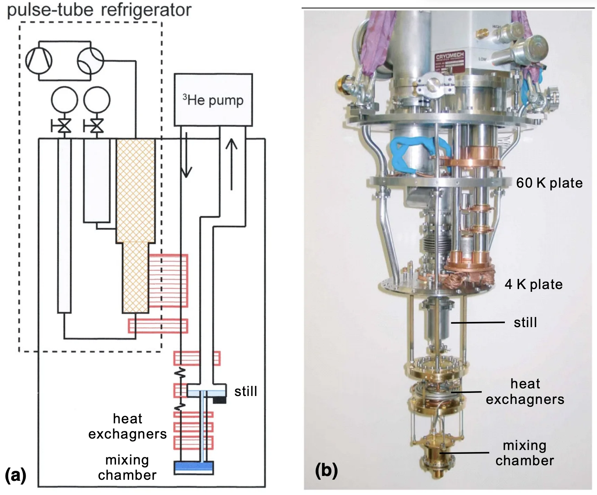

PHYS598500 · Week 1 · T1
Computation Is Physical
From Mechanized Reasoning to Quantum Hardware and the Limits of Physics
T2 · Fabricating Qubits from Circuits


T5 · Stabilizing Designs into Chips


T6 · Cryogenics, Signal, and System Integration


T7 · Integrating a Complete Quantum Computer

Let's start!
Why Must Computer Science Eventually Meet Physics?
→Because computation needs hardware.
In physics, we study:
Matter
the hardware itself
Energy–momentum transfer
how we control the hardware
State evolution
how the algorithm is encoded
Can Calculation and Reasoning Be Mechanized?
From Human Procedure to Programmable Machine
Lookup Tables have Errors

 wrong
wrong

 correct
correct
Seven-place common (base-10) logarithms: the page prints only the last four mantissa digits, the leading \(760\) coming from the block header N. 57500 L. 759.
\(\log_{10}57628=4.7606335\)Hutton …6336
\(\log_{10}57629=4.7606411\)Hutton …6410
Why Mechanize Tables? Too many errors


Charles Babbage: From Automatic Tables to a Programmable Machine
Charles Babbage (1791–1871) first designed the Difference Engine to automate numerical tables. Finite differences reduce polynomial tabulation to repeated addition, making the task suitable for a gear-based mechanism and reducing human calculation and typesetting errors.
The later Analytical Engine was a general architecture. It separated a “store” from a “mill,” used punched cards to specify operations and data, and included sequencing, repetition, and conditional control.
The full Analytical Engine was not completed in Babbage's lifetime.

Difference Engine No. 2: Built in Metal

Complete
reconstruction
Ref:
Science Museum Group Collection
▲
Ref:
https://collection.sciencemuseumgroup.org.uk/objects/co62748/babbages-difference-engine-no-2-2002
拷貝.png)
Decimal figure wheels and gear
trains
Ref:
Science Museum Group Collection
▲
Ref:
https://collection.sciencemuseumgroup.org.uk/objects/co62748/babbages-difference-engine-no-2-2002
Difference Engine No. 2: From Drawings to Mechanism

Plan of the calculating
mechanism
Ref:
Cronatec · How did the Difference Engine work?
▲
Ref:
https://cronatec.ch/how-did-the-difference-engine-work/

Addition and carriage
mechanisms
Ref:
Cronatec · How did the Difference Engine work?
▲
Ref:
https://cronatec.ch/how-did-the-difference-engine-work/
Analytical Engine: Mechanism and Punched-Card Control

Ref: Science Museum Group Collection

Ref: Science Museum Group Collection
Boolean Algebra: Logic Becomes Algebra
Boole showed that logical statements can be represented by symbols and manipulated with algebraic rules.
For Boolean variables \(a,b\in \{F,T\} \text{ or }\{0,1\}\), logical AND behaves exactly like multiplication:
Logic: \(a\ \mathrm{AND}\ b\)
| \(a\) | \(b\) | \(a\land b\) |
|---|---|---|
| F | F | F |
| F | T | F |
| T | F | F |
| T | T | T |
Algebra: \(a*b\)
| \(a\) | \(b\) | \(a*b\) |
|---|---|---|
| 0 | 0 | 0 |
| 0 | 1 | 0 |
| 1 | 0 | 0 |
| 1 | 1 | 1 |
For \(a,b\in\{0,1\}\), \(a\land b=a*b\).

George Boole
Ref:
Wikipedia
Logic Gates Implement Boolean Functions
Let \(A=\{a=1\}\) and \(B=\{b=1\}\). The shaded region is where the output equals \(1\).


Half adder: AND → Carry; XOR → Sum
Shannon: Boolean Algebra Becomes Switching-Circuit Design
Claude Shannon (1916–2001) showed that the ON/OFF behavior of relay circuits follows Boolean algebra. A switch is OFF when the circuit is open and ON when a conducting path is closed. We encode OFF as \(0\) and ON as \(1\).
| Connection | Boolean operation |
|---|---|
| Series: output is ON only when \(a\) and \(b\) are ON | \(a\land b\) |
| Parallel: output is ON when \(a\) or \(b\) is ON | \(a\lor b\) |
| Normally closed: output is ON when \(a\) is OFF | \(\neg a\) |
\[\boxed{\text{Boolean expression}\longleftrightarrow\text{switching network}.}\]
This made circuit design systematic: specify the desired ON/OFF output, express and simplify it with Boolean algebra, then connect switches that realize the same relation.
.jpg)
{kind=link}
{kind=link}
{kind=link}
{kind=link}
{kind=link}
{kind=link}
{kind=link}
{kind=link}
{kind=link}
{kind=link}
{kind=link}
What Can a Machine Compute?
Computability and Complexity
Feynman's Question
An arbitrary pure state of \(n\) two-level systems is
\[|\psi\rangle=\sum_{x\in\{0,1\}^n}\alpha_x|x\rangle,\qquad \sum_x|\alpha_x|^2=1.\]
A direct classical description contains \(2^n\) complex amplitudes. This does not prove that every quantum system is classically hard to simulate—structure, symmetry, sparsity, and approximation can help—but it identifies a serious scaling problem for generic many-body dynamics.
Feynman's proposal reverses the strategy: rather than forcing a classical machine to track every amplitude, construct a controllable quantum system whose own evolution represents the target dynamics.

Richard Feynman
Ref:
Wikipedia
Why Shor's Algorithm Threatens RSA
RSA publishes \(N=pq\), the product of two large secret primes. Multiplying is easy; recovering \(p\) and \(q\) from \(N\) is believed to be extremely costly classically — and once you have them, the private key follows.
Shor's key step: turn factoring into period finding, which a large fault-tolerant quantum computer does in polynomial time.


Ref: Wikipedia
▲
Ref:
https://en.wikipedia.org/wiki/Peter_Shor
Keys in use today
2048 bits
\(\approx617\) decimal digits. NIST wants 3072 bits beyond 2030. The classical record is RSA-250 — only 250 digits, in 2020.
Perfect qubits Shor needs
\(\sim\)4,100 logical
About \(2n+3\) for an \(n\)-bit modulus. These are idealised, error-free qubits — nobody has one.
After error correction
\(10^{6}\)–\(10^{7}\) physical
The surface code spends thousands of physical qubits per logical one: 20 million qubits / 8 hours (Gidney & Ekerå 2021), cut to under 1 million / a few days by 2025.
Prototypes today
\(10^{2}\)–\(10^{3}\) physical
IBM Heron 156, Google Willow 105, IBM Condor 1,121 — all noisy, none fault-tolerant. Roughly four orders of magnitude short.
How we encode algorithm into physical evolution?
From Reversible Boolean Functions to Unitary and Hamiltonian Evolution
AND Gate：Series Switches
{kind=link}
{kind=link}
{kind=link}
OR Gate：Parallel Switches
{kind=link}
{kind=link}
{kind=link}
{kind=link}
{kind=link}
{kind=link}
{kind=link}
Information Erasure Makes Logic Irreversible
A gate is reversible only when its output identifies one unique input.

Erasing one unbiased bit requires the environment to receive at least
\[\Delta S_{\mathrm{env}}\ge k_B\ln2\]
\[Q_{\min}\ge k_BT\ln2\]
Half adder: \(01\) and \(10\) both produce \((\mathrm{Carry},\mathrm{Sum})=(0,1)\).

Source: Landauer (1961).
{kind=link}
{kind=link}
A Reversible Half Adder Keeps Enough Information
Conventional: information is lost
| A | B | Carry | Sum |
|---|---|---|---|
| 0 | 0 | 0 | 0 |
| 0 | 1 | 0 | 1 |
| 1 | 0 | 0 | 1 |
| 1 | 1 | 1 | 0 |
01 and 10 both give (Carry, Sum) = (0, 1).
{kind=link}
Reversible embedding: retain one input
| A | B | C | P | R = Carry | Q = Sum |
|---|---|---|---|---|---|
| 0 | 0 | 0 | 0 | 0 | 0 |
| 0 | 1 | 0 | 0 | 0 | 1 |
| 1 | 0 | 0 | 1 | 0 | 1 |
| 1 | 1 | 0 | 1 | 1 | 0 |
With C = 0, P = A preserves the input, so 01 and 10 remain distinct.
How we encode algorithm into QUANTUM physical evolution?
Pauli Matrices and Bloch Sphere
{kind=link}
{kind=link}
{kind=link}
{kind=link}
{kind=link}
{kind=link}
{kind=link}
{kind=link}
{kind=link}
Q: Gate-Based vs. Adiabatic Quantum Computing
Adiabatic Evolution / Quantum Annealing

{kind=link}
{kind=link}
{kind=link}